Gestió de Baixa Participant
Una vegada publicat el llistat definitiu pot haver alguna petició de baixa. Caldrà gestionar la baixa i la posterior alta d’un participant en llista d’espera.
Entrar al curs en Gesform a Gestión Solicitud de Participantes
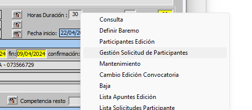
Buscar la persona que vol donar-se de baixa. En la columna Desc. Estado fem doble clic a la paraula Confirmado, s’obrirà una finestra per canviaer l’estat a Renuncia i acceptem.
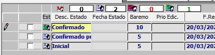
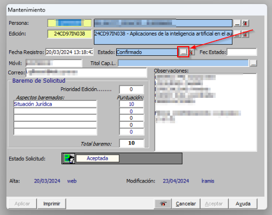
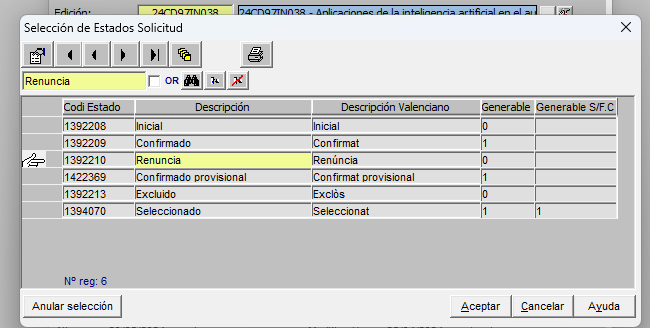
Donem a Aplicar i acceptem la finestra emergent que ix. I Aceptar i acceptem la finestra emergent que ix.
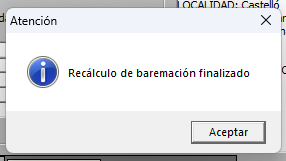
Posteriorment cal entrar a Participantes Edición.
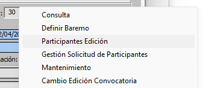
Busquem al participant i donem doble clic a la icona de la personeta.
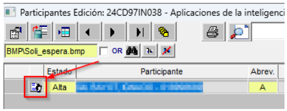
S’obrirà una finestra emergent en la que tindrem que canviar l’estat a Baja, Calificación No apto i obrim el desplegable per indicar el motiu.
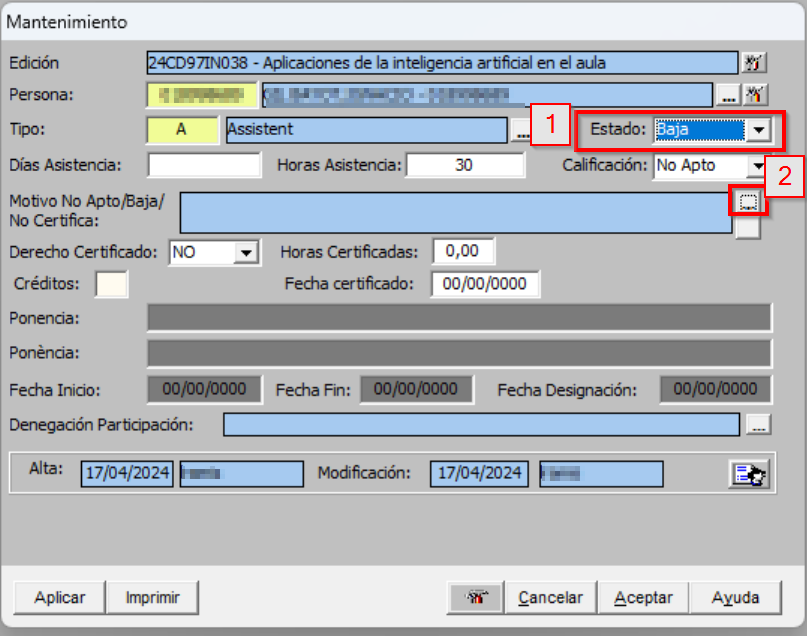
Busquem com a motiu Renuncia i apliquem aceptem i per que aparega al requadre caldrà clicar al quadrat que hi ha a la part de sota dels dos quadrats.
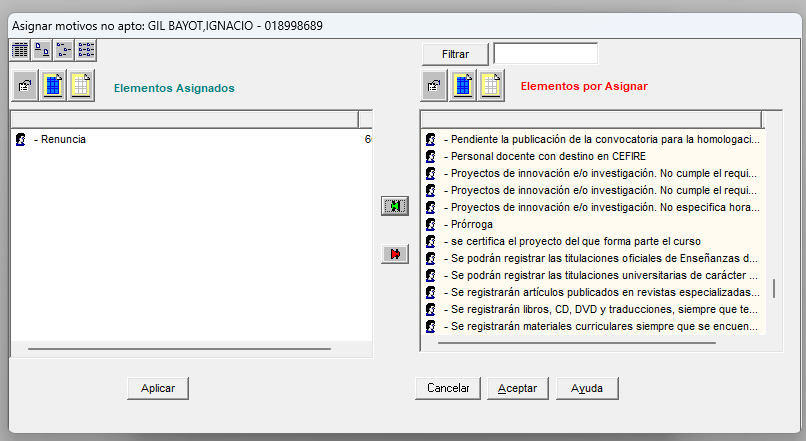
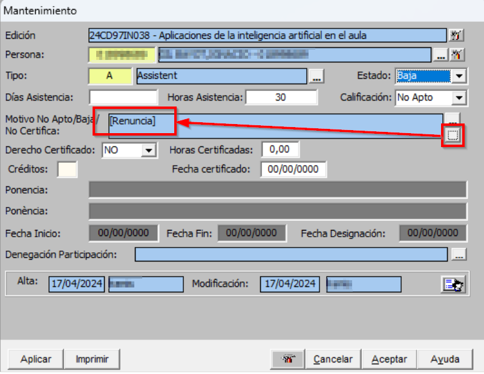
Apliquem i aceptem i una vegada refresquem ja tindrem la persona de baixa.
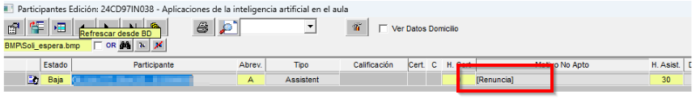